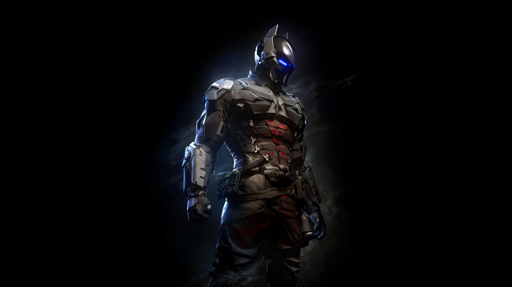
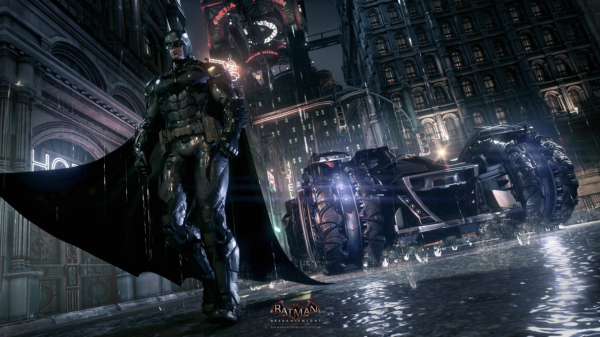
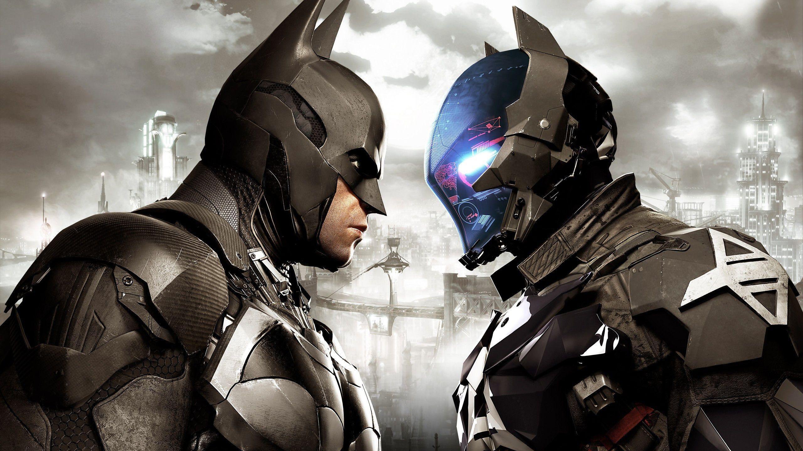

ABOUT
Batman: Arkham Knight is an action-packed video game where players take on the role of Batman to battle against classic villains, including the mysterious Arkham Knight, who is determined to destroy Gotham City. With an open-world environment, players use stealth, gadgets, and hand-to-hand combat, as well as drive the Batmobile in high-speed chases and vehicular combat. Alongside the main story campaign, the game also includes side missions and challenges. The game is renowned for its impressive graphics and immersive storytelling, and is widely regarded as one of the best superhero video games ever made.
RATINGS
IGN : 9.2/10 Arkham Asylum, the first Batman game from Rocksteady Studios, had the sense of a fresh beginning for superhero action games. Batman: Arkham Knight has a sense of finality. It builds on the revolutionary strike-and-counter fighting style with powerful new moves and enemies; it expands on Arkham City's open world with a larger, more detailed version of Gotham; it introduces a new fully playable Batmobile and makes it an important part of the action and puzzles; and it brings all of Batman’s closest family of Gotham superheroes and rogues together for an amazing, great-looking finale.
The Gaurdian: If Arkham Knight really is the end for developer Rocksteady Studios and the Dark Knight, at least the two are parting on a high. Not only has this development team polished its series game mechanics to near-perfection, it has also reached a perfect understanding of this grimy comic book world.
SPECIFICATIONS
MINIMUM REQUIREMENTS
CPU: Intel Core i5-750, 2.67 GHz | AMD Phenom II X4 965, 3.4 GHz
Ram: 6 GB
Video Card: NVIDIA GeForce GTX 660 (2 GB Memory Minimum) | AMD Radeon HD 7950 (3 GB Memory Minimum)
DEDICATED VIDEO RAM: 2 GB (3 GB AMD)
PIXEL SHADER: 5.0
VERTEX SHADER:5.0
OS: Win 7 SP1, Win 8.1 (64-bit Operating System Required)
FREE DISK SPACE: 45 GB
RECOMMENDED REQUIREMENTS
CPU: Intel Core i7-3770, 3.4 GHz | AMD FX-8350, 4.0 GHz
RAM: 8 GB
VIDEO CARD:NVIDIA GeForce GTX 760 - 3 GB Memory Recommended
DEDICATED VIDEO RAM:3 GB
PIXEL SHADER: 5.0
VERTEX SHADER:5.0
OS: Win 7 SP1, Win 8.1 (64-bit Operating System Required)